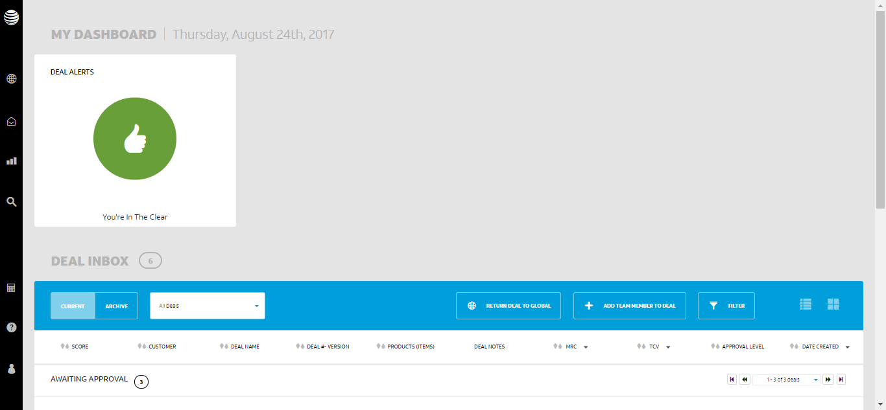
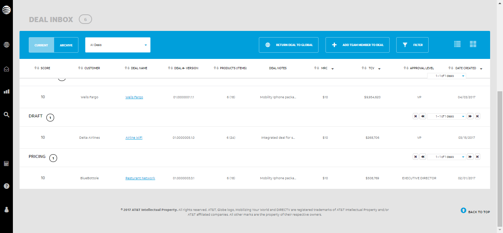

The following table lists down the Sequential Steps during the Run
TestCase Name: runTest : Iteration 1
Time Taken for Executing: 234 Sec
Current Run Number: Run 4 Method Type: Test Method
TestCase Name: runTest : Iteration 1
Time Taken for Executing: 234 Sec
Current Run Number: Run 4 Method Type: Test Method
Requirement Coverage/ TestCase Description
Requirement Coverage/Build Info/Cycle - Description
Execution Platform Details
| O.S | : | Windows 7, amd64Bit, v6.1 |
| Java | : | 1.8.0_71 |
| Hostname | : | C8L8102 |
| Selenium | : | 2.45.0 |
Summary
| Status | : | Failed |
| Execution Date | : | 24-Aug-2017 03:57:07 |
| Browser | : | chrome,v60.0.3112.101 |
Author Info
| Author Name | : | PwC QE Team |
| Creation Date | : | 24-Aug-2017 03:53:12 |
| Version | : | 1.0 |
| System User | : | ishaangvst |
| S.No | Step Description | Expected Value | Actual Value | Line No | Status | Screen shot |
|---|---|---|---|---|---|---|
| 1 | Pass | Chrome should initialize | Chrome initialized | 195 |  |
|
| 2 | Fail | Driver should identify locator username using name | no such element: Unable to locate element: {"method":"name","selector":"username"} (Session info: chrome=60.0.3112.101) (Driver info: chromedriver=2.29.461591 (62ebf098771772160f391d75e589dc567915b233),platform=Windows NT 6.1.7601 SP1 x86_64) (WARNING: The server did not provide any stacktrace information) Command duration or timeout: 10.03 seconds For documentation on this error, please visit: http://seleniumhq.org/exceptions/no_such_element.html Build info: version: '2.45.0', revision: '32a636c', time: '2015-03-05 22:01:35' System info: host: 'C8L8102', ip: '135.28.137.39', os.name: 'Windows 7', os.arch: 'amd64', os.version: '6.1', java.version: '1.8.0_71' Driver info: org.openqa.selenium.chrome.ChromeDriver Capabilities [{applicationCacheEnabled=false, rotatable=false, mobileEmulationEnabled=false, networkConnectionEnabled=false, chrome={chromedriverVersion=2.29.461591 (62ebf098771772160f391d75e589dc567915b233), userDataDir=C:\Users\ISHAAN~1\AppData\Local\Temp\scoped_dir1500_17695}, takesHeapSnapshot=true, pageLoadStrategy=normal, databaseEnabled=false, handlesAlerts=true, hasTouchScreen=false, version=60.0.3112.101, platform=XP, browserConnectionEnabled=false, nativeEvents=true, acceptSslCerts=true, locationContextEnabled=true, webStorageEnabled=true, browserName=chrome, takesScreenshot=true, javascriptEnabled=true, cssSelectorsEnabled=true, unexpectedAlertBehaviour=}] Session ID: 1d353f947adde694a59c6da268e9397e *** Element info: {Using=name, value=username} | 611 |  |
 |
| 3 | Fail | Webelement username should present | null | 1313 | |
 |
| 4 | Fail | Driver should identify locator password using name | no such element: Unable to locate element: {"method":"name","selector":"password"} (Session info: chrome=60.0.3112.101) (Driver info: chromedriver=2.29.461591 (62ebf098771772160f391d75e589dc567915b233),platform=Windows NT 6.1.7601 SP1 x86_64) (WARNING: The server did not provide any stacktrace information) Command duration or timeout: 10.04 seconds For documentation on this error, please visit: http://seleniumhq.org/exceptions/no_such_element.html Build info: version: '2.45.0', revision: '32a636c', time: '2015-03-05 22:01:35' System info: host: 'C8L8102', ip: '135.28.137.39', os.name: 'Windows 7', os.arch: 'amd64', os.version: '6.1', java.version: '1.8.0_71' Driver info: org.openqa.selenium.chrome.ChromeDriver Capabilities [{applicationCacheEnabled=false, rotatable=false, mobileEmulationEnabled=false, networkConnectionEnabled=false, chrome={chromedriverVersion=2.29.461591 (62ebf098771772160f391d75e589dc567915b233), userDataDir=C:\Users\ISHAAN~1\AppData\Local\Temp\scoped_dir1500_17695}, takesHeapSnapshot=true, pageLoadStrategy=normal, databaseEnabled=false, handlesAlerts=true, hasTouchScreen=false, version=60.0.3112.101, platform=XP, browserConnectionEnabled=false, nativeEvents=true, acceptSslCerts=true, locationContextEnabled=true, webStorageEnabled=true, browserName=chrome, takesScreenshot=true, javascriptEnabled=true, cssSelectorsEnabled=true, unexpectedAlertBehaviour=}] Session ID: 1d353f947adde694a59c6da268e9397e *** Element info: {Using=name, value=password} | 611 | |
 |
| 5 | Fail | Webelement password should present | null | 1313 | |
 |
| 6 | Fail | Driver should identify locator btnSubmit using name | no such element: Unable to locate element: {"method":"name","selector":"btnSubmit"} (Session info: chrome=60.0.3112.101) (Driver info: chromedriver=2.29.461591 (62ebf098771772160f391d75e589dc567915b233),platform=Windows NT 6.1.7601 SP1 x86_64) (WARNING: The server did not provide any stacktrace information) Command duration or timeout: 10.06 seconds For documentation on this error, please visit: http://seleniumhq.org/exceptions/no_such_element.html Build info: version: '2.45.0', revision: '32a636c', time: '2015-03-05 22:01:35' System info: host: 'C8L8102', ip: '135.28.137.39', os.name: 'Windows 7', os.arch: 'amd64', os.version: '6.1', java.version: '1.8.0_71' Driver info: org.openqa.selenium.chrome.ChromeDriver Capabilities [{applicationCacheEnabled=false, rotatable=false, mobileEmulationEnabled=false, networkConnectionEnabled=false, chrome={chromedriverVersion=2.29.461591 (62ebf098771772160f391d75e589dc567915b233), userDataDir=C:\Users\ISHAAN~1\AppData\Local\Temp\scoped_dir1500_17695}, takesHeapSnapshot=true, pageLoadStrategy=normal, databaseEnabled=false, handlesAlerts=true, hasTouchScreen=false, version=60.0.3112.101, platform=XP, browserConnectionEnabled=false, nativeEvents=true, acceptSslCerts=true, locationContextEnabled=true, webStorageEnabled=true, browserName=chrome, takesScreenshot=true, javascriptEnabled=true, cssSelectorsEnabled=true, unexpectedAlertBehaviour=}] Session ID: 1d353f947adde694a59c6da268e9397e *** Element info: {Using=name, value=btnSubmit} | 611 | |
|
| 7 | Fail | Webelement btnSubmit should present | null | 1313 | |
 |
| 8 | Fail | Driver should identify locator //app-dashboard-tiles//*[@class='sub-title'] using xpath | no such element: Unable to locate element: {"method":"xpath","selector":"//app-dashboard-tiles//*[@class='sub-title']"} (Session info: chrome=60.0.3112.101) (Driver info: chromedriver=2.29.461591 (62ebf098771772160f391d75e589dc567915b233),platform=Windows NT 6.1.7601 SP1 x86_64) (WARNING: The server did not provide any stacktrace information) Command duration or timeout: 10.02 seconds For documentation on this error, please visit: http://seleniumhq.org/exceptions/no_such_element.html Build info: version: '2.45.0', revision: '32a636c', time: '2015-03-05 22:01:35' System info: host: 'C8L8102', ip: '135.28.137.39', os.name: 'Windows 7', os.arch: 'amd64', os.version: '6.1', java.version: '1.8.0_71' Driver info: org.openqa.selenium.chrome.ChromeDriver Capabilities [{applicationCacheEnabled=false, rotatable=false, mobileEmulationEnabled=false, networkConnectionEnabled=false, chrome={chromedriverVersion=2.29.461591 (62ebf098771772160f391d75e589dc567915b233), userDataDir=C:\Users\ISHAAN~1\AppData\Local\Temp\scoped_dir1500_17695}, takesHeapSnapshot=true, pageLoadStrategy=normal, databaseEnabled=false, handlesAlerts=true, hasTouchScreen=false, version=60.0.3112.101, platform=XP, browserConnectionEnabled=false, nativeEvents=true, acceptSslCerts=true, locationContextEnabled=true, webStorageEnabled=true, browserName=chrome, takesScreenshot=true, javascriptEnabled=true, cssSelectorsEnabled=true, unexpectedAlertBehaviour=}] Session ID: 1d353f947adde694a59c6da268e9397e *** Element info: {Using=xpath, value=//app-dashboard-tiles//*[@class='sub-title']} | 611 | |
 |
| 9 | Fail | Webelement //app-dashboard-tiles//*[@class='sub-title'] should present | null | 1313 | |
 |
| 10 | Failed | Checking presence of the element [Admin Dashboard Tiles] | Element [Admin Dashboard Tiles] NOT found. | 67 | |
 |
| 11 | Fail | Driver should identify locator //div[@class='admin-navigation']//li/a[text()='Product Manager'] using xpath | no such element: Unable to locate element: {"method":"xpath","selector":"//div[@class='admin-navigation']//li/a[text()='Product Manager']"} (Session info: chrome=60.0.3112.101) (Driver info: chromedriver=2.29.461591 (62ebf098771772160f391d75e589dc567915b233),platform=Windows NT 6.1.7601 SP1 x86_64) (WARNING: The server did not provide any stacktrace information) Command duration or timeout: 10.09 seconds For documentation on this error, please visit: http://seleniumhq.org/exceptions/no_such_element.html Build info: version: '2.45.0', revision: '32a636c', time: '2015-03-05 22:01:35' System info: host: 'C8L8102', ip: '135.28.137.39', os.name: 'Windows 7', os.arch: 'amd64', os.version: '6.1', java.version: '1.8.0_71' Driver info: org.openqa.selenium.chrome.ChromeDriver Capabilities [{applicationCacheEnabled=false, rotatable=false, mobileEmulationEnabled=false, networkConnectionEnabled=false, chrome={chromedriverVersion=2.29.461591 (62ebf098771772160f391d75e589dc567915b233), userDataDir=C:\Users\ISHAAN~1\AppData\Local\Temp\scoped_dir1500_17695}, takesHeapSnapshot=true, pageLoadStrategy=normal, databaseEnabled=false, handlesAlerts=true, hasTouchScreen=false, version=60.0.3112.101, platform=XP, browserConnectionEnabled=false, nativeEvents=true, acceptSslCerts=true, locationContextEnabled=true, webStorageEnabled=true, browserName=chrome, takesScreenshot=true, javascriptEnabled=true, cssSelectorsEnabled=true, unexpectedAlertBehaviour=}] Session ID: 1d353f947adde694a59c6da268e9397e *** Element info: {Using=xpath, value=//div[@class='admin-navigation']//li/a[text()='Product Manager']} | 611 | |
 |
| 12 | Fail | Webelement //div[@class='admin-navigation']//li/a[text()='Product Manager'] should present | null | 1313 | |
 |
| 13 | Failed | Checking presence of the element [Product Manager] | Element [Product Manager] NOT found. | 67 | |
 |
| 14 | Fail | Driver should identify locator //*[text()='CREATE NEW PRODUCT']/parent::button using xpath | no such element: Unable to locate element: {"method":"xpath","selector":"//*[text()='CREATE NEW PRODUCT']/parent::button"} (Session info: chrome=60.0.3112.101) (Driver info: chromedriver=2.29.461591 (62ebf098771772160f391d75e589dc567915b233),platform=Windows NT 6.1.7601 SP1 x86_64) (WARNING: The server did not provide any stacktrace information) Command duration or timeout: 10.07 seconds For documentation on this error, please visit: http://seleniumhq.org/exceptions/no_such_element.html Build info: version: '2.45.0', revision: '32a636c', time: '2015-03-05 22:01:35' System info: host: 'C8L8102', ip: '135.28.137.39', os.name: 'Windows 7', os.arch: 'amd64', os.version: '6.1', java.version: '1.8.0_71' Driver info: org.openqa.selenium.chrome.ChromeDriver Capabilities [{applicationCacheEnabled=false, rotatable=false, mobileEmulationEnabled=false, networkConnectionEnabled=false, chrome={chromedriverVersion=2.29.461591 (62ebf098771772160f391d75e589dc567915b233), userDataDir=C:\Users\ISHAAN~1\AppData\Local\Temp\scoped_dir1500_17695}, takesHeapSnapshot=true, pageLoadStrategy=normal, databaseEnabled=false, handlesAlerts=true, hasTouchScreen=false, version=60.0.3112.101, platform=XP, browserConnectionEnabled=false, nativeEvents=true, acceptSslCerts=true, locationContextEnabled=true, webStorageEnabled=true, browserName=chrome, takesScreenshot=true, javascriptEnabled=true, cssSelectorsEnabled=true, unexpectedAlertBehaviour=}] Session ID: 1d353f947adde694a59c6da268e9397e *** Element info: {Using=xpath, value=//*[text()='CREATE NEW PRODUCT']/parent::button} | 611 | |
|
| 15 | Fail | Webelement //*[text()='CREATE NEW PRODUCT']/parent::button should present | null | 1313 | |
 |
| 16 | Fail | Webelement //p[@class='col-lg-7 builder-label text-uppercase' and contains(text(),'Product ID')] should present | null | 1313 | |
|
| 17 | Failed | Checking presence of the element [Label - Product ID] | Element [Label - Product ID] NOT found. | 67 | |
|
| 18 | Fail | Driver should identify locator //p[@class='col-lg-7 builder-label text-uppercase' and contains(text(),'Product ID')]/following-sibling::div/input using xpath | no such window: target window already closed from unknown error: web view not found (Session info: chrome=60.0.3112.101) (Driver info: chromedriver=2.29.461591 (62ebf098771772160f391d75e589dc567915b233),platform=Windows NT 6.1.7601 SP1 x86_64) (WARNING: The server did not provide any stacktrace information) Command duration or timeout: 8 milliseconds Build info: version: '2.45.0', revision: '32a636c', time: '2015-03-05 22:01:35' System info: host: 'C8L8102', ip: '135.28.137.39', os.name: 'Windows 7', os.arch: 'amd64', os.version: '6.1', java.version: '1.8.0_71' Driver info: org.openqa.selenium.chrome.ChromeDriver Capabilities [{applicationCacheEnabled=false, rotatable=false, mobileEmulationEnabled=false, networkConnectionEnabled=false, chrome={chromedriverVersion=2.29.461591 (62ebf098771772160f391d75e589dc567915b233), userDataDir=C:\Users\ISHAAN~1\AppData\Local\Temp\scoped_dir1500_17695}, takesHeapSnapshot=true, pageLoadStrategy=normal, databaseEnabled=false, handlesAlerts=true, hasTouchScreen=false, version=60.0.3112.101, platform=XP, browserConnectionEnabled=false, nativeEvents=true, acceptSslCerts=true, locationContextEnabled=true, webStorageEnabled=true, browserName=chrome, takesScreenshot=true, javascriptEnabled=true, cssSelectorsEnabled=true, unexpectedAlertBehaviour=}] Session ID: 1d353f947adde694a59c6da268e9397e *** Element info: {Using=xpath, value=//p[@class='col-lg-7 builder-label text-uppercase' and contains(text(),'Product ID')]/following-sibling::div/input} | 611 | |
|
| 19 | Fail | Webelement //p[@class='col-lg-7 builder-label text-uppercase' and contains(text(),'Product ID')]/following-sibling::div/input should present | null | 1313 | |
|
| 20 | Failed | Checking presence of the element [Product ID Textbox] | Element [Product ID Textbox] NOT found. | 67 | |
|
| 21 | Fail | Driver should identify locator //p[@class='col-lg-7 builder-label text-uppercase' and contains(text(),'Product Type')] using xpath | no such window: target window already closed from unknown error: web view not found (Session info: chrome=60.0.3112.101) (Driver info: chromedriver=2.29.461591 (62ebf098771772160f391d75e589dc567915b233),platform=Windows NT 6.1.7601 SP1 x86_64) (WARNING: The server did not provide any stacktrace information) Command duration or timeout: 9 milliseconds Build info: version: '2.45.0', revision: '32a636c', time: '2015-03-05 22:01:35' System info: host: 'C8L8102', ip: '135.28.137.39', os.name: 'Windows 7', os.arch: 'amd64', os.version: '6.1', java.version: '1.8.0_71' Driver info: org.openqa.selenium.chrome.ChromeDriver Capabilities [{applicationCacheEnabled=false, rotatable=false, mobileEmulationEnabled=false, networkConnectionEnabled=false, chrome={chromedriverVersion=2.29.461591 (62ebf098771772160f391d75e589dc567915b233), userDataDir=C:\Users\ISHAAN~1\AppData\Local\Temp\scoped_dir1500_17695}, takesHeapSnapshot=true, pageLoadStrategy=normal, databaseEnabled=false, handlesAlerts=true, hasTouchScreen=false, version=60.0.3112.101, platform=XP, browserConnectionEnabled=false, nativeEvents=true, acceptSslCerts=true, locationContextEnabled=true, webStorageEnabled=true, browserName=chrome, takesScreenshot=true, javascriptEnabled=true, cssSelectorsEnabled=true, unexpectedAlertBehaviour=}] Session ID: 1d353f947adde694a59c6da268e9397e *** Element info: {Using=xpath, value=//p[@class='col-lg-7 builder-label text-uppercase' and contains(text(),'Product Type')]} | 611 | |
|
| 22 | Fail | Webelement //p[@class='col-lg-7 builder-label text-uppercase' and contains(text(),'Product Type')] should present | null | 1313 | |
|
| 23 | Failed | Checking presence of the element [Label - Product Type] | Element [Label - Product Type] NOT found. | 67 | |
|
| 24 | Fail | Driver should identify locator //p[@class='col-lg-7 builder-label text-uppercase' and contains(text(),'Product Type')]/following::p-dropdown[1]//select using xpath | no such window: target window already closed from unknown error: web view not found (Session info: chrome=60.0.3112.101) (Driver info: chromedriver=2.29.461591 (62ebf098771772160f391d75e589dc567915b233),platform=Windows NT 6.1.7601 SP1 x86_64) (WARNING: The server did not provide any stacktrace information) Command duration or timeout: 10 milliseconds Build info: version: '2.45.0', revision: '32a636c', time: '2015-03-05 22:01:35' System info: host: 'C8L8102', ip: '135.28.137.39', os.name: 'Windows 7', os.arch: 'amd64', os.version: '6.1', java.version: '1.8.0_71' Driver info: org.openqa.selenium.chrome.ChromeDriver Capabilities [{applicationCacheEnabled=false, rotatable=false, mobileEmulationEnabled=false, networkConnectionEnabled=false, chrome={chromedriverVersion=2.29.461591 (62ebf098771772160f391d75e589dc567915b233), userDataDir=C:\Users\ISHAAN~1\AppData\Local\Temp\scoped_dir1500_17695}, takesHeapSnapshot=true, pageLoadStrategy=normal, databaseEnabled=false, handlesAlerts=true, hasTouchScreen=false, version=60.0.3112.101, platform=XP, browserConnectionEnabled=false, nativeEvents=true, acceptSslCerts=true, locationContextEnabled=true, webStorageEnabled=true, browserName=chrome, takesScreenshot=true, javascriptEnabled=true, cssSelectorsEnabled=true, unexpectedAlertBehaviour=}] Session ID: 1d353f947adde694a59c6da268e9397e *** Element info: {Using=xpath, value=//p[@class='col-lg-7 builder-label text-uppercase' and contains(text(),'Product Type')]/following::p-dropdown[1]//select} | 611 | |
|
| 25 | Fail | Webelement //p[@class='col-lg-7 builder-label text-uppercase' and contains(text(),'Product Type')]/following::p-dropdown[1]//select should present | null | 1313 | |
|
| 26 | Failed | Checking presence of the element [Product Type List] | Element [Product Type List] NOT found. | 67 | |
|
| 27 | Fail | Driver should identify locator //p[@class='col-lg-7 builder-label text-uppercase' and contains(text(),'Product Group')] using xpath | no such window: target window already closed from unknown error: web view not found (Session info: chrome=60.0.3112.101) (Driver info: chromedriver=2.29.461591 (62ebf098771772160f391d75e589dc567915b233),platform=Windows NT 6.1.7601 SP1 x86_64) (WARNING: The server did not provide any stacktrace information) Command duration or timeout: 8 milliseconds Build info: version: '2.45.0', revision: '32a636c', time: '2015-03-05 22:01:35' System info: host: 'C8L8102', ip: '135.28.137.39', os.name: 'Windows 7', os.arch: 'amd64', os.version: '6.1', java.version: '1.8.0_71' Driver info: org.openqa.selenium.chrome.ChromeDriver Capabilities [{applicationCacheEnabled=false, rotatable=false, mobileEmulationEnabled=false, networkConnectionEnabled=false, chrome={chromedriverVersion=2.29.461591 (62ebf098771772160f391d75e589dc567915b233), userDataDir=C:\Users\ISHAAN~1\AppData\Local\Temp\scoped_dir1500_17695}, takesHeapSnapshot=true, pageLoadStrategy=normal, databaseEnabled=false, handlesAlerts=true, hasTouchScreen=false, version=60.0.3112.101, platform=XP, browserConnectionEnabled=false, nativeEvents=true, acceptSslCerts=true, locationContextEnabled=true, webStorageEnabled=true, browserName=chrome, takesScreenshot=true, javascriptEnabled=true, cssSelectorsEnabled=true, unexpectedAlertBehaviour=}] Session ID: 1d353f947adde694a59c6da268e9397e *** Element info: {Using=xpath, value=//p[@class='col-lg-7 builder-label text-uppercase' and contains(text(),'Product Group')]} | 611 | |
|
| 28 | Fail | Webelement //p[@class='col-lg-7 builder-label text-uppercase' and contains(text(),'Product Group')] should present | null | 1313 | |
|
| 29 | Failed | Checking presence of the element [Label - Product Group] | Element [Label - Product Group] NOT found. | 67 | |
|
| 30 | Fail | Driver should identify locator //p[@class='col-lg-7 builder-label text-uppercase' and contains(text(),'Product Group')]/following::p-dropdown[1]//select using xpath | no such window: target window already closed from unknown error: web view not found (Session info: chrome=60.0.3112.101) (Driver info: chromedriver=2.29.461591 (62ebf098771772160f391d75e589dc567915b233),platform=Windows NT 6.1.7601 SP1 x86_64) (WARNING: The server did not provide any stacktrace information) Command duration or timeout: 27 milliseconds Build info: version: '2.45.0', revision: '32a636c', time: '2015-03-05 22:01:35' System info: host: 'C8L8102', ip: '135.28.137.39', os.name: 'Windows 7', os.arch: 'amd64', os.version: '6.1', java.version: '1.8.0_71' Driver info: org.openqa.selenium.chrome.ChromeDriver Capabilities [{applicationCacheEnabled=false, rotatable=false, mobileEmulationEnabled=false, networkConnectionEnabled=false, chrome={chromedriverVersion=2.29.461591 (62ebf098771772160f391d75e589dc567915b233), userDataDir=C:\Users\ISHAAN~1\AppData\Local\Temp\scoped_dir1500_17695}, takesHeapSnapshot=true, pageLoadStrategy=normal, databaseEnabled=false, handlesAlerts=true, hasTouchScreen=false, version=60.0.3112.101, platform=XP, browserConnectionEnabled=false, nativeEvents=true, acceptSslCerts=true, locationContextEnabled=true, webStorageEnabled=true, browserName=chrome, takesScreenshot=true, javascriptEnabled=true, cssSelectorsEnabled=true, unexpectedAlertBehaviour=}] Session ID: 1d353f947adde694a59c6da268e9397e *** Element info: {Using=xpath, value=//p[@class='col-lg-7 builder-label text-uppercase' and contains(text(),'Product Group')]/following::p-dropdown[1]//select} | 611 | |
|
| 31 | Fail | Webelement //p[@class='col-lg-7 builder-label text-uppercase' and contains(text(),'Product Group')]/following::p-dropdown[1]//select should present | null | 1313 | |
|
| 32 | Failed | Checking presence of the element [Product Group List] | Element [Product Group List] NOT found. | 67 | |
|
| 33 | Fail | Driver should identify locator //p[@class='col-lg-7 builder-label text-uppercase' and contains(text(),'Version')] using xpath | no such window: target window already closed from unknown error: web view not found (Session info: chrome=60.0.3112.101) (Driver info: chromedriver=2.29.461591 (62ebf098771772160f391d75e589dc567915b233),platform=Windows NT 6.1.7601 SP1 x86_64) (WARNING: The server did not provide any stacktrace information) Command duration or timeout: 10 milliseconds Build info: version: '2.45.0', revision: '32a636c', time: '2015-03-05 22:01:35' System info: host: 'C8L8102', ip: '135.28.137.39', os.name: 'Windows 7', os.arch: 'amd64', os.version: '6.1', java.version: '1.8.0_71' Driver info: org.openqa.selenium.chrome.ChromeDriver Capabilities [{applicationCacheEnabled=false, rotatable=false, mobileEmulationEnabled=false, networkConnectionEnabled=false, chrome={chromedriverVersion=2.29.461591 (62ebf098771772160f391d75e589dc567915b233), userDataDir=C:\Users\ISHAAN~1\AppData\Local\Temp\scoped_dir1500_17695}, takesHeapSnapshot=true, pageLoadStrategy=normal, databaseEnabled=false, handlesAlerts=true, hasTouchScreen=false, version=60.0.3112.101, platform=XP, browserConnectionEnabled=false, nativeEvents=true, acceptSslCerts=true, locationContextEnabled=true, webStorageEnabled=true, browserName=chrome, takesScreenshot=true, javascriptEnabled=true, cssSelectorsEnabled=true, unexpectedAlertBehaviour=}] Session ID: 1d353f947adde694a59c6da268e9397e *** Element info: {Using=xpath, value=//p[@class='col-lg-7 builder-label text-uppercase' and contains(text(),'Version')]} | 611 | |
|
| 34 | Fail | Webelement //p[@class='col-lg-7 builder-label text-uppercase' and contains(text(),'Version')] should present | null | 1313 | |
|
| 35 | Failed | Checking presence of the element [Label - Product Version] | Element [Label - Product Version] NOT found. | 67 | |
|
| 36 | Fail | Driver should identify locator //p[@class='col-lg-7 builder-label text-uppercase' and contains(text(),'Version')]/following-sibling::div/input using xpath | no such window: target window already closed from unknown error: web view not found (Session info: chrome=60.0.3112.101) (Driver info: chromedriver=2.29.461591 (62ebf098771772160f391d75e589dc567915b233),platform=Windows NT 6.1.7601 SP1 x86_64) (WARNING: The server did not provide any stacktrace information) Command duration or timeout: 11 milliseconds Build info: version: '2.45.0', revision: '32a636c', time: '2015-03-05 22:01:35' System info: host: 'C8L8102', ip: '135.28.137.39', os.name: 'Windows 7', os.arch: 'amd64', os.version: '6.1', java.version: '1.8.0_71' Driver info: org.openqa.selenium.chrome.ChromeDriver Capabilities [{applicationCacheEnabled=false, rotatable=false, mobileEmulationEnabled=false, networkConnectionEnabled=false, chrome={chromedriverVersion=2.29.461591 (62ebf098771772160f391d75e589dc567915b233), userDataDir=C:\Users\ISHAAN~1\AppData\Local\Temp\scoped_dir1500_17695}, takesHeapSnapshot=true, pageLoadStrategy=normal, databaseEnabled=false, handlesAlerts=true, hasTouchScreen=false, version=60.0.3112.101, platform=XP, browserConnectionEnabled=false, nativeEvents=true, acceptSslCerts=true, locationContextEnabled=true, webStorageEnabled=true, browserName=chrome, takesScreenshot=true, javascriptEnabled=true, cssSelectorsEnabled=true, unexpectedAlertBehaviour=}] Session ID: 1d353f947adde694a59c6da268e9397e *** Element info: {Using=xpath, value=//p[@class='col-lg-7 builder-label text-uppercase' and contains(text(),'Version')]/following-sibling::div/input} | 611 | |
|
| 37 | Fail | Webelement //p[@class='col-lg-7 builder-label text-uppercase' and contains(text(),'Version')]/following-sibling::div/input should present | null | 1313 | |
|
| 38 | Failed | Checking presence of the element [Product version Textbox] | Element [Product version Textbox] NOT found. | 67 | |
|
| 39 | Fail | Driver should identify locator //span[contains(text(),'Add Category')] using xpath | no such window: target window already closed from unknown error: web view not found (Session info: chrome=60.0.3112.101) (Driver info: chromedriver=2.29.461591 (62ebf098771772160f391d75e589dc567915b233),platform=Windows NT 6.1.7601 SP1 x86_64) (WARNING: The server did not provide any stacktrace information) Command duration or timeout: 6 milliseconds Build info: version: '2.45.0', revision: '32a636c', time: '2015-03-05 22:01:35' System info: host: 'C8L8102', ip: '135.28.137.39', os.name: 'Windows 7', os.arch: 'amd64', os.version: '6.1', java.version: '1.8.0_71' Driver info: org.openqa.selenium.chrome.ChromeDriver Capabilities [{applicationCacheEnabled=false, rotatable=false, mobileEmulationEnabled=false, networkConnectionEnabled=false, chrome={chromedriverVersion=2.29.461591 (62ebf098771772160f391d75e589dc567915b233), userDataDir=C:\Users\ISHAAN~1\AppData\Local\Temp\scoped_dir1500_17695}, takesHeapSnapshot=true, pageLoadStrategy=normal, databaseEnabled=false, handlesAlerts=true, hasTouchScreen=false, version=60.0.3112.101, platform=XP, browserConnectionEnabled=false, nativeEvents=true, acceptSslCerts=true, locationContextEnabled=true, webStorageEnabled=true, browserName=chrome, takesScreenshot=true, javascriptEnabled=true, cssSelectorsEnabled=true, unexpectedAlertBehaviour=}] Session ID: 1d353f947adde694a59c6da268e9397e *** Element info: {Using=xpath, value=//span[contains(text(),'Add Category')]} | 611 | |
|
| 40 | Fail | Webelement //span[contains(text(),'Add Category')] should present | null | 1313 | |
|
| 41 | Failed | Checking presence of the element [Add Category button] | Element [Add Category button] NOT found. | 67 | |
|
| 42 | Fail | Driver should identify locator //p[@class='col-lg-7 builder-label text-uppercase' and contains(text(),'Effective Date Range')] using xpath | no such window: target window already closed from unknown error: web view not found (Session info: chrome=60.0.3112.101) (Driver info: chromedriver=2.29.461591 (62ebf098771772160f391d75e589dc567915b233),platform=Windows NT 6.1.7601 SP1 x86_64) (WARNING: The server did not provide any stacktrace information) Command duration or timeout: 5 milliseconds Build info: version: '2.45.0', revision: '32a636c', time: '2015-03-05 22:01:35' System info: host: 'C8L8102', ip: '135.28.137.39', os.name: 'Windows 7', os.arch: 'amd64', os.version: '6.1', java.version: '1.8.0_71' Driver info: org.openqa.selenium.chrome.ChromeDriver Capabilities [{applicationCacheEnabled=false, rotatable=false, mobileEmulationEnabled=false, networkConnectionEnabled=false, chrome={chromedriverVersion=2.29.461591 (62ebf098771772160f391d75e589dc567915b233), userDataDir=C:\Users\ISHAAN~1\AppData\Local\Temp\scoped_dir1500_17695}, takesHeapSnapshot=true, pageLoadStrategy=normal, databaseEnabled=false, handlesAlerts=true, hasTouchScreen=false, version=60.0.3112.101, platform=XP, browserConnectionEnabled=false, nativeEvents=true, acceptSslCerts=true, locationContextEnabled=true, webStorageEnabled=true, browserName=chrome, takesScreenshot=true, javascriptEnabled=true, cssSelectorsEnabled=true, unexpectedAlertBehaviour=}] Session ID: 1d353f947adde694a59c6da268e9397e *** Element info: {Using=xpath, value=//p[@class='col-lg-7 builder-label text-uppercase' and contains(text(),'Effective Date Range')]} | 611 | |
|
| 43 | Fail | Webelement //p[@class='col-lg-7 builder-label text-uppercase' and contains(text(),'Effective Date Range')] should present | null | 1313 | |
|
| 44 | Failed | Checking presence of the element [Label - Effective Date Range] | Element [Label - Effective Date Range] NOT found. | 67 | |
|
| 45 | Fail | Driver should identify locator //p-calendar[1]//span[@class='ui-button-text ui-c'] using xpath | no such window: target window already closed from unknown error: web view not found (Session info: chrome=60.0.3112.101) (Driver info: chromedriver=2.29.461591 (62ebf098771772160f391d75e589dc567915b233),platform=Windows NT 6.1.7601 SP1 x86_64) (WARNING: The server did not provide any stacktrace information) Command duration or timeout: 7 milliseconds Build info: version: '2.45.0', revision: '32a636c', time: '2015-03-05 22:01:35' System info: host: 'C8L8102', ip: '135.28.137.39', os.name: 'Windows 7', os.arch: 'amd64', os.version: '6.1', java.version: '1.8.0_71' Driver info: org.openqa.selenium.chrome.ChromeDriver Capabilities [{applicationCacheEnabled=false, rotatable=false, mobileEmulationEnabled=false, networkConnectionEnabled=false, chrome={chromedriverVersion=2.29.461591 (62ebf098771772160f391d75e589dc567915b233), userDataDir=C:\Users\ISHAAN~1\AppData\Local\Temp\scoped_dir1500_17695}, takesHeapSnapshot=true, pageLoadStrategy=normal, databaseEnabled=false, handlesAlerts=true, hasTouchScreen=false, version=60.0.3112.101, platform=XP, browserConnectionEnabled=false, nativeEvents=true, acceptSslCerts=true, locationContextEnabled=true, webStorageEnabled=true, browserName=chrome, takesScreenshot=true, javascriptEnabled=true, cssSelectorsEnabled=true, unexpectedAlertBehaviour=}] Session ID: 1d353f947adde694a59c6da268e9397e *** Element info: {Using=xpath, value=//p-calendar[1]//span[@class='ui-button-text ui-c']} | 611 | |
|
| 46 | Fail | Webelement //p-calendar[1]//span[@class='ui-button-text ui-c'] should present | null | 1313 | |
|
| 47 | Failed | Checking presence of the element [Start Date Calendar] | Element [Start Date Calendar] NOT found. | 67 | |
|
| 48 | Fail | Driver should identify locator //p-calendar[2]//span[@class='ui-button-text ui-c'] using xpath | no such window: target window already closed from unknown error: web view not found (Session info: chrome=60.0.3112.101) (Driver info: chromedriver=2.29.461591 (62ebf098771772160f391d75e589dc567915b233),platform=Windows NT 6.1.7601 SP1 x86_64) (WARNING: The server did not provide any stacktrace information) Command duration or timeout: 5 milliseconds Build info: version: '2.45.0', revision: '32a636c', time: '2015-03-05 22:01:35' System info: host: 'C8L8102', ip: '135.28.137.39', os.name: 'Windows 7', os.arch: 'amd64', os.version: '6.1', java.version: '1.8.0_71' Driver info: org.openqa.selenium.chrome.ChromeDriver Capabilities [{applicationCacheEnabled=false, rotatable=false, mobileEmulationEnabled=false, networkConnectionEnabled=false, chrome={chromedriverVersion=2.29.461591 (62ebf098771772160f391d75e589dc567915b233), userDataDir=C:\Users\ISHAAN~1\AppData\Local\Temp\scoped_dir1500_17695}, takesHeapSnapshot=true, pageLoadStrategy=normal, databaseEnabled=false, handlesAlerts=true, hasTouchScreen=false, version=60.0.3112.101, platform=XP, browserConnectionEnabled=false, nativeEvents=true, acceptSslCerts=true, locationContextEnabled=true, webStorageEnabled=true, browserName=chrome, takesScreenshot=true, javascriptEnabled=true, cssSelectorsEnabled=true, unexpectedAlertBehaviour=}] Session ID: 1d353f947adde694a59c6da268e9397e *** Element info: {Using=xpath, value=//p-calendar[2]//span[@class='ui-button-text ui-c']} | 611 | |
|
| 49 | Fail | Webelement //p-calendar[2]//span[@class='ui-button-text ui-c'] should present | null | 1313 | |
|
| 50 | Failed | Checking presence of the element [End Date Calendar] | Element [End Date Calendar] NOT found. | 67 | |
|
| 51 | Fail | Driver should identify locator //p[contains(text(),'Product Manager')] using xpath | no such window: target window already closed from unknown error: web view not found (Session info: chrome=60.0.3112.101) (Driver info: chromedriver=2.29.461591 (62ebf098771772160f391d75e589dc567915b233),platform=Windows NT 6.1.7601 SP1 x86_64) (WARNING: The server did not provide any stacktrace information) Command duration or timeout: 4 milliseconds Build info: version: '2.45.0', revision: '32a636c', time: '2015-03-05 22:01:35' System info: host: 'C8L8102', ip: '135.28.137.39', os.name: 'Windows 7', os.arch: 'amd64', os.version: '6.1', java.version: '1.8.0_71' Driver info: org.openqa.selenium.chrome.ChromeDriver Capabilities [{applicationCacheEnabled=false, rotatable=false, mobileEmulationEnabled=false, networkConnectionEnabled=false, chrome={chromedriverVersion=2.29.461591 (62ebf098771772160f391d75e589dc567915b233), userDataDir=C:\Users\ISHAAN~1\AppData\Local\Temp\scoped_dir1500_17695}, takesHeapSnapshot=true, pageLoadStrategy=normal, databaseEnabled=false, handlesAlerts=true, hasTouchScreen=false, version=60.0.3112.101, platform=XP, browserConnectionEnabled=false, nativeEvents=true, acceptSslCerts=true, locationContextEnabled=true, webStorageEnabled=true, browserName=chrome, takesScreenshot=true, javascriptEnabled=true, cssSelectorsEnabled=true, unexpectedAlertBehaviour=}] Session ID: 1d353f947adde694a59c6da268e9397e *** Element info: {Using=xpath, value=//p[contains(text(),'Product Manager')]} | 611 | |
|
| 52 | Fail | Webelement //p[contains(text(),'Product Manager')] should present | null | 1313 | |
|
| 53 | Failed | Checking presence of the element [Product Status label] | Element [Product Status label] NOT found. | 67 | |
|
| 54 | Fail | Driver should identify locator //button/*[@class='ui-button-text ui-c' and contains(text(),'Notes')] using xpath | no such window: target window already closed from unknown error: web view not found (Session info: chrome=60.0.3112.101) (Driver info: chromedriver=2.29.461591 (62ebf098771772160f391d75e589dc567915b233),platform=Windows NT 6.1.7601 SP1 x86_64) (WARNING: The server did not provide any stacktrace information) Command duration or timeout: 6 milliseconds Build info: version: '2.45.0', revision: '32a636c', time: '2015-03-05 22:01:35' System info: host: 'C8L8102', ip: '135.28.137.39', os.name: 'Windows 7', os.arch: 'amd64', os.version: '6.1', java.version: '1.8.0_71' Driver info: org.openqa.selenium.chrome.ChromeDriver Capabilities [{applicationCacheEnabled=false, rotatable=false, mobileEmulationEnabled=false, networkConnectionEnabled=false, chrome={chromedriverVersion=2.29.461591 (62ebf098771772160f391d75e589dc567915b233), userDataDir=C:\Users\ISHAAN~1\AppData\Local\Temp\scoped_dir1500_17695}, takesHeapSnapshot=true, pageLoadStrategy=normal, databaseEnabled=false, handlesAlerts=true, hasTouchScreen=false, version=60.0.3112.101, platform=XP, browserConnectionEnabled=false, nativeEvents=true, acceptSslCerts=true, locationContextEnabled=true, webStorageEnabled=true, browserName=chrome, takesScreenshot=true, javascriptEnabled=true, cssSelectorsEnabled=true, unexpectedAlertBehaviour=}] Session ID: 1d353f947adde694a59c6da268e9397e *** Element info: {Using=xpath, value=//button/*[@class='ui-button-text ui-c' and contains(text(),'Notes')]} | 611 | |
|
| 55 | Fail | Webelement //button/*[@class='ui-button-text ui-c' and contains(text(),'Notes')] should present | null | 1313 | |
|
| 56 | Failed | Checking presence of the element [Notes Button] | Element [Notes Button] NOT found. | 67 | |
|
| 57 | Fail | Driver should identify locator //p[@class='col-lg-7 builder-label text-uppercase' and contains(text(),'Last Modified')] using xpath | no such window: target window already closed from unknown error: web view not found (Session info: chrome=60.0.3112.101) (Driver info: chromedriver=2.29.461591 (62ebf098771772160f391d75e589dc567915b233),platform=Windows NT 6.1.7601 SP1 x86_64) (WARNING: The server did not provide any stacktrace information) Command duration or timeout: 4 milliseconds Build info: version: '2.45.0', revision: '32a636c', time: '2015-03-05 22:01:35' System info: host: 'C8L8102', ip: '135.28.137.39', os.name: 'Windows 7', os.arch: 'amd64', os.version: '6.1', java.version: '1.8.0_71' Driver info: org.openqa.selenium.chrome.ChromeDriver Capabilities [{applicationCacheEnabled=false, rotatable=false, mobileEmulationEnabled=false, networkConnectionEnabled=false, chrome={chromedriverVersion=2.29.461591 (62ebf098771772160f391d75e589dc567915b233), userDataDir=C:\Users\ISHAAN~1\AppData\Local\Temp\scoped_dir1500_17695}, takesHeapSnapshot=true, pageLoadStrategy=normal, databaseEnabled=false, handlesAlerts=true, hasTouchScreen=false, version=60.0.3112.101, platform=XP, browserConnectionEnabled=false, nativeEvents=true, acceptSslCerts=true, locationContextEnabled=true, webStorageEnabled=true, browserName=chrome, takesScreenshot=true, javascriptEnabled=true, cssSelectorsEnabled=true, unexpectedAlertBehaviour=}] Session ID: 1d353f947adde694a59c6da268e9397e *** Element info: {Using=xpath, value=//p[@class='col-lg-7 builder-label text-uppercase' and contains(text(),'Last Modified')]} | 611 | |
|
| 58 | Fail | Webelement //p[@class='col-lg-7 builder-label text-uppercase' and contains(text(),'Last Modified')] should present | null | 1313 | |
|
| 59 | Failed | Checking presence of the element [Label - Last Modified By] | Element [Label - Last Modified By] NOT found. | 67 | |
|
| 60 | Fail | Driver should identify locator //p[@class='col-lg-7 builder-label text-uppercase' and contains(text(),'Last Modified')]/following-sibling::div/input using xpath | no such window: target window already closed from unknown error: web view not found (Session info: chrome=60.0.3112.101) (Driver info: chromedriver=2.29.461591 (62ebf098771772160f391d75e589dc567915b233),platform=Windows NT 6.1.7601 SP1 x86_64) (WARNING: The server did not provide any stacktrace information) Command duration or timeout: 5 milliseconds Build info: version: '2.45.0', revision: '32a636c', time: '2015-03-05 22:01:35' System info: host: 'C8L8102', ip: '135.28.137.39', os.name: 'Windows 7', os.arch: 'amd64', os.version: '6.1', java.version: '1.8.0_71' Driver info: org.openqa.selenium.chrome.ChromeDriver Capabilities [{applicationCacheEnabled=false, rotatable=false, mobileEmulationEnabled=false, networkConnectionEnabled=false, chrome={chromedriverVersion=2.29.461591 (62ebf098771772160f391d75e589dc567915b233), userDataDir=C:\Users\ISHAAN~1\AppData\Local\Temp\scoped_dir1500_17695}, takesHeapSnapshot=true, pageLoadStrategy=normal, databaseEnabled=false, handlesAlerts=true, hasTouchScreen=false, version=60.0.3112.101, platform=XP, browserConnectionEnabled=false, nativeEvents=true, acceptSslCerts=true, locationContextEnabled=true, webStorageEnabled=true, browserName=chrome, takesScreenshot=true, javascriptEnabled=true, cssSelectorsEnabled=true, unexpectedAlertBehaviour=}] Session ID: 1d353f947adde694a59c6da268e9397e *** Element info: {Using=xpath, value=//p[@class='col-lg-7 builder-label text-uppercase' and contains(text(),'Last Modified')]/following-sibling::div/input} | 611 | |
|
| 61 | Fail | Webelement //p[@class='col-lg-7 builder-label text-uppercase' and contains(text(),'Last Modified')]/following-sibling::div/input should present | null | 1313 | |
|
| 62 | Failed | Checking presence of the element [Last Modified By - Textbox] | Element [Last Modified By - Textbox] NOT found. | 67 | |
|
| 63 | Fail | Driver should identify locator //p[@class='col-lg-7 builder-label text-uppercase' and contains(text(),'Created By')] using xpath | no such window: target window already closed from unknown error: web view not found (Session info: chrome=60.0.3112.101) (Driver info: chromedriver=2.29.461591 (62ebf098771772160f391d75e589dc567915b233),platform=Windows NT 6.1.7601 SP1 x86_64) (WARNING: The server did not provide any stacktrace information) Command duration or timeout: 5 milliseconds Build info: version: '2.45.0', revision: '32a636c', time: '2015-03-05 22:01:35' System info: host: 'C8L8102', ip: '135.28.137.39', os.name: 'Windows 7', os.arch: 'amd64', os.version: '6.1', java.version: '1.8.0_71' Driver info: org.openqa.selenium.chrome.ChromeDriver Capabilities [{applicationCacheEnabled=false, rotatable=false, mobileEmulationEnabled=false, networkConnectionEnabled=false, chrome={chromedriverVersion=2.29.461591 (62ebf098771772160f391d75e589dc567915b233), userDataDir=C:\Users\ISHAAN~1\AppData\Local\Temp\scoped_dir1500_17695}, takesHeapSnapshot=true, pageLoadStrategy=normal, databaseEnabled=false, handlesAlerts=true, hasTouchScreen=false, version=60.0.3112.101, platform=XP, browserConnectionEnabled=false, nativeEvents=true, acceptSslCerts=true, locationContextEnabled=true, webStorageEnabled=true, browserName=chrome, takesScreenshot=true, javascriptEnabled=true, cssSelectorsEnabled=true, unexpectedAlertBehaviour=}] Session ID: 1d353f947adde694a59c6da268e9397e *** Element info: {Using=xpath, value=//p[@class='col-lg-7 builder-label text-uppercase' and contains(text(),'Created By')]} | 611 | |
|
| 64 | Fail | Webelement //p[@class='col-lg-7 builder-label text-uppercase' and contains(text(),'Created By')] should present | null | 1313 | |
|
| 65 | Failed | Checking presence of the element [Label - Created By] | Element [Label - Created By] NOT found. | 67 | |
|
| 66 | Fail | Driver should identify locator //p[@class='col-lg-7 builder-label text-uppercase' and contains(text(),'Created By')]/following-sibling::div/input using xpath | no such window: target window already closed from unknown error: web view not found (Session info: chrome=60.0.3112.101) (Driver info: chromedriver=2.29.461591 (62ebf098771772160f391d75e589dc567915b233),platform=Windows NT 6.1.7601 SP1 x86_64) (WARNING: The server did not provide any stacktrace information) Command duration or timeout: 3 milliseconds Build info: version: '2.45.0', revision: '32a636c', time: '2015-03-05 22:01:35' System info: host: 'C8L8102', ip: '135.28.137.39', os.name: 'Windows 7', os.arch: 'amd64', os.version: '6.1', java.version: '1.8.0_71' Driver info: org.openqa.selenium.chrome.ChromeDriver Capabilities [{applicationCacheEnabled=false, rotatable=false, mobileEmulationEnabled=false, networkConnectionEnabled=false, chrome={chromedriverVersion=2.29.461591 (62ebf098771772160f391d75e589dc567915b233), userDataDir=C:\Users\ISHAAN~1\AppData\Local\Temp\scoped_dir1500_17695}, takesHeapSnapshot=true, pageLoadStrategy=normal, databaseEnabled=false, handlesAlerts=true, hasTouchScreen=false, version=60.0.3112.101, platform=XP, browserConnectionEnabled=false, nativeEvents=true, acceptSslCerts=true, locationContextEnabled=true, webStorageEnabled=true, browserName=chrome, takesScreenshot=true, javascriptEnabled=true, cssSelectorsEnabled=true, unexpectedAlertBehaviour=}] Session ID: 1d353f947adde694a59c6da268e9397e *** Element info: {Using=xpath, value=//p[@class='col-lg-7 builder-label text-uppercase' and contains(text(),'Created By')]/following-sibling::div/input} | 611 | |
|
| 67 | Fail | Webelement //p[@class='col-lg-7 builder-label text-uppercase' and contains(text(),'Created By')]/following-sibling::div/input should present | null | 1313 | |
|
| 68 | Failed | Checking presence of the element [Created By - Textbox] | Element [Created By - Textbox] NOT found. | 67 | |
|
| 69 | Fail | Driver should identify locator //*[@class='btn btn-blue-icon margin-l-3 line-item-font'] using xpath | no such window: target window already closed from unknown error: web view not found (Session info: chrome=60.0.3112.101) (Driver info: chromedriver=2.29.461591 (62ebf098771772160f391d75e589dc567915b233),platform=Windows NT 6.1.7601 SP1 x86_64) (WARNING: The server did not provide any stacktrace information) Command duration or timeout: 3 milliseconds Build info: version: '2.45.0', revision: '32a636c', time: '2015-03-05 22:01:35' System info: host: 'C8L8102', ip: '135.28.137.39', os.name: 'Windows 7', os.arch: 'amd64', os.version: '6.1', java.version: '1.8.0_71' Driver info: org.openqa.selenium.chrome.ChromeDriver Capabilities [{applicationCacheEnabled=false, rotatable=false, mobileEmulationEnabled=false, networkConnectionEnabled=false, chrome={chromedriverVersion=2.29.461591 (62ebf098771772160f391d75e589dc567915b233), userDataDir=C:\Users\ISHAAN~1\AppData\Local\Temp\scoped_dir1500_17695}, takesHeapSnapshot=true, pageLoadStrategy=normal, databaseEnabled=false, handlesAlerts=true, hasTouchScreen=false, version=60.0.3112.101, platform=XP, browserConnectionEnabled=false, nativeEvents=true, acceptSslCerts=true, locationContextEnabled=true, webStorageEnabled=true, browserName=chrome, takesScreenshot=true, javascriptEnabled=true, cssSelectorsEnabled=true, unexpectedAlertBehaviour=}] Session ID: 1d353f947adde694a59c6da268e9397e *** Element info: {Using=xpath, value=//*[@class='btn btn-blue-icon margin-l-3 line-item-font']} | 611 | |
|
| 70 | Fail | Driver should identify locator //p[contains(text(),'Product Manager')] using xpath | no such window: target window already closed from unknown error: web view not found (Session info: chrome=60.0.3112.101) (Driver info: chromedriver=2.29.461591 (62ebf098771772160f391d75e589dc567915b233),platform=Windows NT 6.1.7601 SP1 x86_64) (WARNING: The server did not provide any stacktrace information) Command duration or timeout: 4 milliseconds Build info: version: '2.45.0', revision: '32a636c', time: '2015-03-05 22:01:35' System info: host: 'C8L8102', ip: '135.28.137.39', os.name: 'Windows 7', os.arch: 'amd64', os.version: '6.1', java.version: '1.8.0_71' Driver info: org.openqa.selenium.chrome.ChromeDriver Capabilities [{applicationCacheEnabled=false, rotatable=false, mobileEmulationEnabled=false, networkConnectionEnabled=false, chrome={chromedriverVersion=2.29.461591 (62ebf098771772160f391d75e589dc567915b233), userDataDir=C:\Users\ISHAAN~1\AppData\Local\Temp\scoped_dir1500_17695}, takesHeapSnapshot=true, pageLoadStrategy=normal, databaseEnabled=false, handlesAlerts=true, hasTouchScreen=false, version=60.0.3112.101, platform=XP, browserConnectionEnabled=false, nativeEvents=true, acceptSslCerts=true, locationContextEnabled=true, webStorageEnabled=true, browserName=chrome, takesScreenshot=true, javascriptEnabled=true, cssSelectorsEnabled=true, unexpectedAlertBehaviour=}] Session ID: 1d353f947adde694a59c6da268e9397e *** Element info: {Using=xpath, value=//p[contains(text(),'Product Manager')]} | 611 | |
{kind=link}
{kind=link}
{kind=link}
{kind=link}
{kind=link}
Parameters:
Param: chrome
Param: admin
Param: tr0001
Param: 1234
Param: Master Data
Param: autoPROD_001
Param: t569
Param: 00003
Param: Test of deal notes with more than 500 character.Test of deal notes with more than 500 character.Test of deal notes with more than 500 character.Test of deal notes with more than 500 character.Test of deal notes with more than 500 character.Test of deal notes with more than 500 character.Test of deal notes with more than 500 character.Test of deal notes with more than 500 character.Test of deal notes with more than 500 character.Test of deal notes with more than 500 character.Test of deal notes.E
Param: chrome
Param: admin
Param: tr0001
Param: 1234
Param: Master Data
Param: autoPROD_001
Param: t569
Param: 00003
Param: Test of deal notes with more than 500 character.Test of deal notes with more than 500 character.Test of deal notes with more than 500 character.Test of deal notes with more than 500 character.Test of deal notes with more than 500 character.Test of deal notes with more than 500 character.Test of deal notes with more than 500 character.Test of deal notes with more than 500 character.Test of deal notes with more than 500 character.Test of deal notes with more than 500 character.Test of deal notes.E